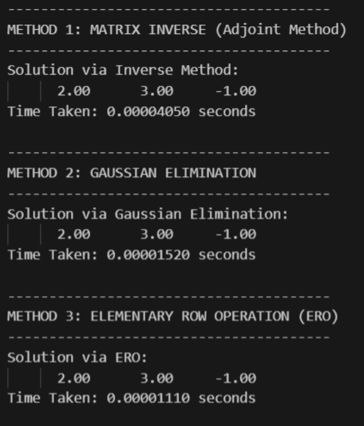
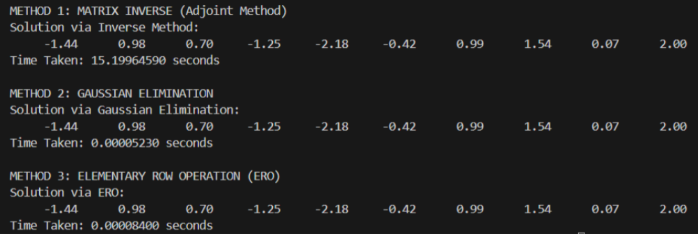

Result and Efficiency Comparison
All 3 methods outputs the correct result, however the efficiency varies.

Matrix Inverse performs the slowest, Gaussian Elimination in between and Elementary Row Operation as the fastest.
However when we increase the size of the matrix to 10x10, Gaussian Elimination performs the fastest, hence the most efficient between the three.

Why Use Other Methods if They Aren’t the "Fastest"?
Gaussian Elimination
- Best for: Solving a single, large system of equations (Ax = b).
- Efficiency: Uses roughly 2/3 n3 operations, the mathematical minimum for a general solution.
- Real-Life Example: Structural Engineering (e.g., Bridge stress analysis) where a massive matrix is solved once for a specific design.
Gauss-Jordan Elimination
- Best for: Theoretical analysis and finding the Reduced Row Echelon Form (RREF).
- Efficiency: Costs n3 operations; slower than Gaussian because it clears entries above the diagonal.
- Real-Life Example: Network Flow/Circuit Analysis to identify dependencies and redundant paths in a power grid.
Matrix Inverse (A-1)
- Best for: Systems where the matrix A stays constant but the input b changes thousands of times.
- Efficiency: High initial cost (2n3), but subsequent solutions are "cheap" matrix-vector multiplications (n2).
- Real-Life Example: GPS Navigation where your device uses a pre-computed inverse to solve your position instantly as signals (b) update.
Project Team
MUHAMMAD ADLI BIN NAZLI
309947
309947
Contribution: Python Code Implementation & Demo Page
MUHAMMAD RAIJALU SIDIK
309140
309140
Contribution: Python Code Implementation
WANG ZHENG
303247
303247
Contribution: Introduction & Video Animation
GRESSEANDIRA RONALD
302965
302965
Contribution: Conclusion & Video Animation